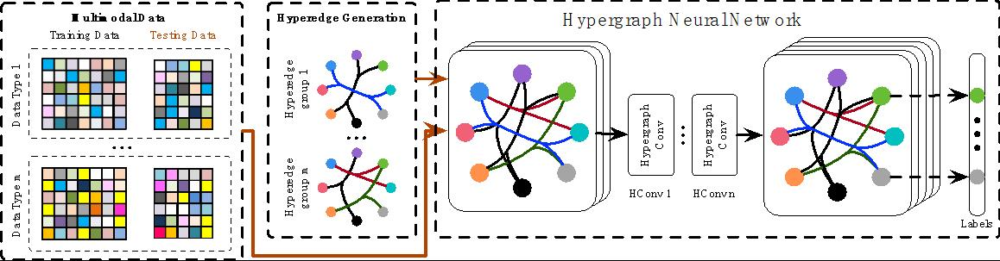

Machine Learning¶
Complex data correlation modelling and representation plays an important role in many applications, such as social media analysis, data classification and medical diagnosis. Here, we focus on graph/hypergraph based learning, hypergraph neural networks, multi-modal data fusion, metric learning and cost-sensitive learning methods, and their applications on visual classification, software defect prediction, and social media data filtering and recommendation.
Hypergraph Neural Networks¶
In this paper, we present a hypergraph neural networks (HGNN) framework for data representation learning, which can encode high-order data correlation in a hypergraph structure. Confronting the challenges of learning representation for complex data in real practice, we propose to incorporate such data structure in a hypergraph, which is more flexible on data modeling, especially when dealing with complex data. In this method, a hyperedge convolution operation is designed to handle the data correlation during representation learning. In this way, traditional hypergraph learning procedure can be conducted using hyperedge convolution operations efficiently. HGNN is able to learn the hidden layer representation considering the high-order data structure, which is a general framework considering the complex data correlations. We have conducted experiments on citation network classification and visual object recognition tasks and compared HGNN with graph convolutional networks and other traditional methods. Experimental results demonstrate that the proposed HGNN method outperforms recent state-of-the-art methods. We can also reveal from the results that the proposed HGNN is superior when dealing with multi-modal data compared with existing methods.